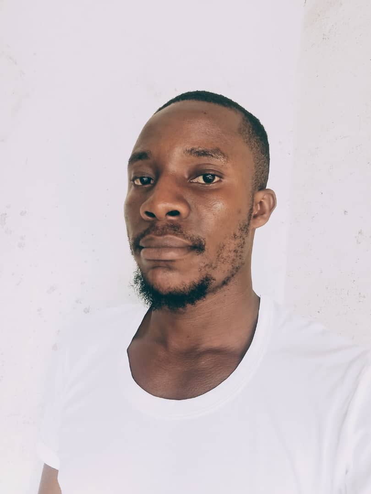

Prince James | WDD 130
Hi, I’m Prince James — a passionate storyteller and dedicated forex trader with a knack for creating emotionally gripping narratives and mastering the financial markets. My journey started with a love for storytelling, building suspenseful, unpredictable tales that captivate YouTube audiences. From dark historical dramas to modern thrillers and interactive adventure games, I craft stories layered with deep characters, emotional twists, and visually striking imagery. I enjoy bringing these stories to life through multi-part YouTube series, blending compelling scripts, vivid imagery, and SEO-driven strategies to reach and engage wider audiences. Alongside my creative ventures, I’ve built a solid foundation in forex trading. Over time, I’ve developed a strong understanding of market structure, order blocks, break-of-structure (BOS), and smart risk management. I actively trade with prop firm accounts like Maven, focusing on disciplined risk control, margin management, and strategic lot sizing. My forex journey has taught me patience, precision, and the importance of emotional discipline — skills I also bring into my storytelling world. What I Do Develop immersive, suspense-driven stories for YouTube and digital platforms Write and design text-based adventure games and interactive fiction Execute structured forex trades on prop firm accounts with sound risk management Generate SEO-optimized content for better reach and engagement Design story visuals and thumbnails for digital storytelling Interests Storytelling Forex trading and prop firm challenges Digital content creation Adventure game development Visual storytelling and video production